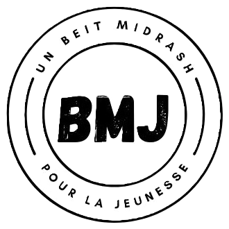

Une jeunesse engagée pour un judaïsme de qualité
Le cœur de notre préoccupation, à BMJ, est de proposer à la jeunesse parisienne potentiellement intéressée, des cours, études, conférences, sur des thématiques liées au judaïsme.
Le terme beit - midrach utilisé dans l’intitulé de l’association et qui en hébreu signifie “maison d’étude” a vertu à insister sur le projet profondément culturel et intellectuel de nos préoccupations et de notre engagement.